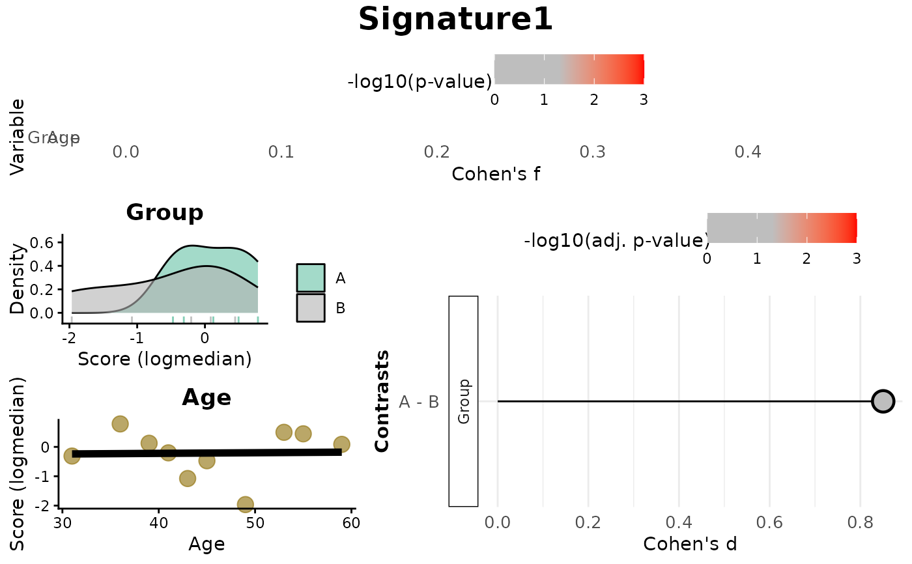

This unified function evaluates associations between gene expression and sample metadata using multiple methods: score-based (logmedian, ssGSEA, ranking) or GSEA-based association. The function returns statistical results and visualizations summarizing effect sizes and significance.
Usage
VariableAssociation(
method = c("ssGSEA", "logmedian", "ranking", "GSEA"),
data,
metadata,
cols,
gene_set,
mode = c("simple", "medium", "extensive"),
stat = NULL,
ignore_NAs = FALSE,
signif_color = "red",
nonsignif_color = "grey",
sig_threshold = 0.05,
saturation_value = NULL,
widthlabels = 18,
labsize = 10,
titlesize = 14,
pointSize = 5,
discrete_colors = NULL,
continuous_color = "#8C6D03",
color_palette = "Set2",
printplt = TRUE,
p.adjust.method = "BH"
)Arguments
- method
Character string specifying the method to use. One of:
"logmedian""ssGSEA""ranking""GSEA"
- data
A data frame with gene expression data (genes as rows, samples as columns).
- metadata
A data frame containing sample metadata; the first column should be the sampleID.
- cols
Character vector of metadata column names to analyze.
- gene_set
A named list of gene sets:
For score-based methods: list of gene vectors.
For GSEA: list of vectors (unidirectional) or data frames (bidirectional).
- mode
Contrast mode:
"simple"(default),"medium", or"extensive".- stat
(GSEA only) Optional. Statistic for ranking genes (
"B"or"t"). Auto-detected ifNULL.- ignore_NAs
(GSEA only) Logical. If
TRUE, rows with NA metadata are removed. Default:FALSE.- signif_color
Color used for significant associations (default:
"red").- nonsignif_color
Color used for non-significant associations (default:
"grey").- sig_threshold
Numeric significance cutoff (default:
0.05).- saturation_value
Lower limit for p-value coloring (default: auto).
- widthlabels
Integer for contrast label width before wrapping (default:
18).- labsize
Axis text size (default:
10).- titlesize
Plot title size (default:
14).- pointSize
Size of plot points (default:
5).- discrete_colors
(Score-based only) Optional named list mapping factor levels to colors.
- continuous_color
(Score-based only) Color for continuous variable points (default:
"#8C6D03").- color_palette
(Score-based only) ColorBrewer palette name for categorical variables (default:
"Set2").- printplt
Logical. If
TRUE, plots are printed. Default:TRUE.- p.adjust.method
Character string specifying the method to use for multiple testing correction. Must be one of
"BH"(Benjamini-Hochberg, default),"holm","hommel","bonferroni","BY"(Benjamini-Yekutieli),"fdr", or"none". Passed top.adjust.
Value
A list with method-specific results and ggplot2-based visualizations:
For score-based methods (logmedian, ssGSEA, ranking):
Overall: Data frame of effect sizes (Cohen's f) and p-values for each metadata variable.Contrasts: Data frame of Cohen's d values and adjusted p-values for pairwise comparisons (based onmode).plot: A combined visualization including:Lollipop plots of Cohen's f,
Distribution plots by variable (density or scatter),
Lollipop plots of Cohen's d for contrasts.
plot_contrasts: Lollipop plots of Cohen's d effect sizes, colored by adjusted p-values (BH).plot_overall: Lollipop plot of Cohen's f, colored by p-values.plot_distributions: List of distribution plots of scores by variable.
For GSEA-based method (GSEA):
data: A data frame with GSEA results, including normalized enrichment scores (NES), adjusted p-values, and contrasts.plot: A ggplot2 lollipop plot of GSEA enrichment across contrasts.
Examples
# Simulate gene expression data (genes as rows, samples as columns)
set.seed(42)
expr <- as.data.frame(matrix(rnorm(500), nrow = 50, ncol = 10))
rownames(expr) <- paste0("Gene", 1:50)
colnames(expr) <- paste0("Sample", 1:10)
# Simulate metadata (categorical and continuous)
metadata <- data.frame(
sampleID = paste0("Sample", 1:10),
Group = rep(c("A", "B"), each = 5),
Age = sample(20:60, 10),
row.names = colnames(expr)
)
# Define a toy gene set: one gene set only for discovery mode!
gene_set <- list(
Signature1 = paste0("Gene", 1:10)
)
# Score-based association (e.g., logmedian)
res_score <- VariableAssociation(
method = "logmedian",
data = expr,
metadata = metadata,
cols = c("Group", "Age"),
gene_set = gene_set
)
#> Considering unidirectional gene signature mode for signature Signature1
#> Warning: NaNs produced
#> Warning: NaNs produced
#> Warning: NaNs produced
#> Warning: NaNs produced
#> Warning: NaNs produced
#> Warning: NaNs produced
#> Warning: NaNs produced
#> Warning: NaNs produced
#> Warning: NaNs produced
#> Warning: NaNs produced
#> Warning: no non-missing arguments to min; returning Inf
#> `geom_smooth()` using formula = 'y ~ x'
 print(res_score$Overall)
#> Variable Cohen_f P_Value
#> 1 Group 0.4754035 0.2156171
#> 2 Age 0.0233770 0.9489047
print(res_score$plot)
print(res_score$Overall)
#> Variable Cohen_f P_Value
#> 1 Group 0.4754035 0.2156171
#> 2 Age 0.0233770 0.9489047
print(res_score$plot)

# GSEA-based association (if GSEA_VariableAssociation is available)
# res_gsea <- VariableAssociation(
# method = "GSEA",
# data = expr,
# metadata = metadata,
# cols = "Group",
# gene_set = gene_set
# )
# print(res_gsea$data)
print(res_score$plot)